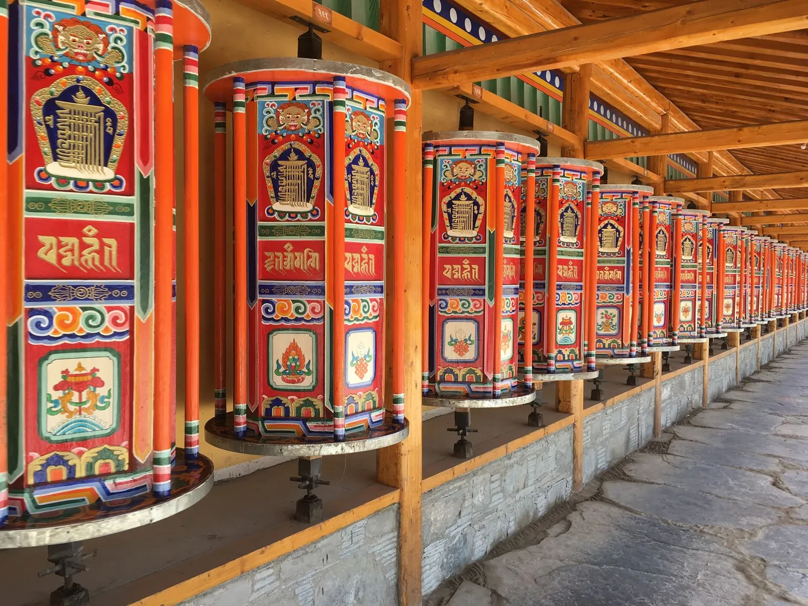

Vitaliteit
“Vitaliteit gaat niet alleen over energie, maar ook over het vermogen om spanning te reguleren, te herstellen en bewust om te gaan met wat het werk van je vraagt.”
Juist daarom zijn ontspanning, lichaamsbewustzijn en herstel belangrijke onderdelen van vitaliteit. Qigong biedt een praktische manier om hier aandacht aan te besteden.
Qigong is een eeuwenoude Chinese bewegingsleer waarin beweging, ontspanning en aandacht samenkomen. De eenvoudige oefeningen helpen deelnemers spanning los te laten, signalen van spanning eerder op te merken en beter te luisteren naar wat hun lichaam nodig heeft.
Zo ontwikkelen deelnemers meer lichaamsbewustzijn, ontspanning en herstelvermogen. De oefeningen ondersteunen zowel fysiek herstel als mentale balans, waardoor zij beter kunnen omgaan met werkdruk, helderder kunnen denken en met meer energie kunnen functioneren.
Qigong draagt bij aan:
- meer ontspanning en mentale balans;
- minder fysieke spanning;
- meer lichaamsbewustzijn;
- betere concentratie;
- bewuster omgaan met stress.
Qigong is toegankelijk voor iedereen, vraagt geen ervaring en kan eenvoudig worden geïntegreerd in de werkdag.
- als onderdeel van een vitaliteitsprogramma;
- tijdens een teamdag;
- als korte interventie rondom werkdruk en herstel;
- als rustige en bewuste start van de werkdag.

Ervaringen
"Mijn ervaring is dat ik met dat ene moment op de dag veel meer energie heb voor de rest van de dag en zelfs de dagen erna. Ook heel fijn vooral als je voor je werk de hele dag achter een beeldscherm zit."
– Jaro –
"Deze momenten bieden me veel ontspanning en een waardevol rustmoment op een werkdag, wat helpt om mijn werk beter te kunnen doen en voorkomt stress bij mij."
– Saskia –